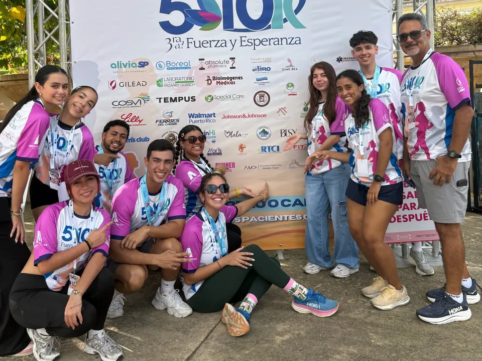

What happens when marketing meets a cause worth running for? On Sunday, September 13, 2026, AMA UPRM joined the 3rd edition of Fuerza y Esperanza, a 5K/10K organized by Caribbean Cancer Care Services at El Parterre in Aguadilla. The event supports the Absolute Cancer Relief Fund, which provides support to cancer patients across Puerto Rico.
More than a race
At 5:30 a.m., our members arrived at the venue ready to support the cause. Messages like “No dejes tu salud para después” and “Yo me chequeo, ¿y tú?” reminded everyone of the importance of cancer awareness and taking care of our health.
Marketing with purpose
In collaboration with ELEVATE, we developed a content plan to amplify the event’s message through runner interviews, encouraging signs and social media content. By combining storytelling and digital marketing, we aimed to extend the conversation beyond the race and inspire more people to get involved. Read the full «Atrévete a Contestar» case study or see the post on Instagram.
The fAMAlia in action
From the early morning start to the finish line, our members showed what community involvement looks like. More than participating in a race, we came together to support a cause and put our marketing skills toward something meaningful.
What’s next?
At AMA UPRM, we believe marketing can do more than promote brands; it can bring people together and inspire change. As we continue our journey toward ICC 2027 in New Orleans, we’re looking forward to creating more experiences with purpose. Want to be part of it? Join AMA UPRM! All majors are welcome.